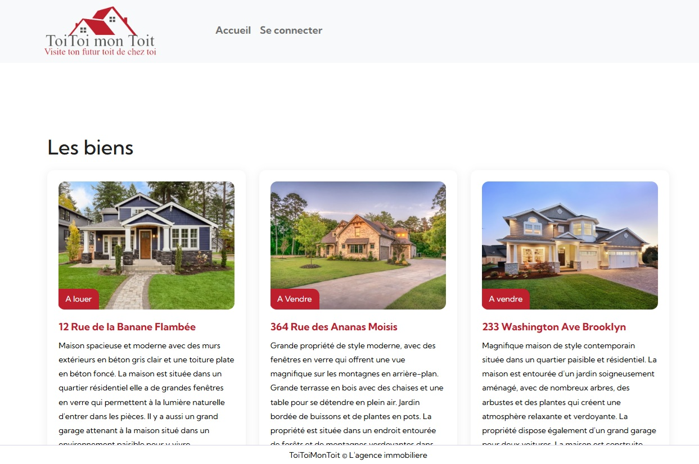

Challenge #29
Challenge en présentiel
Préparation du challenge en présentiel
Le fichier crontab à imprimer et mélanger à vos fichiers fictifs et à placer dans la "poubelle".
# Mise à jour du système tous les dimanches à 3h du matin 0 3 * * 0 /usr/bin/apt-get update && /usr/bin/apt-get upgrade -y # Exécutez une sauvegarde de la base de données chaque jour à minuit 0 0 * * * /usr/bin/mysqldump -u root -pPassword my_database > /home/user/backup/my_database_$(date +\%Y-\%m-\%d).sql # Lancez la tâche de maintenance une fois par mois à 2h du matin 0 2 1 * * /usr/bin/bash /home/user/scripts/maintenance.sh # Changement du password admin de l'interface d'administration chaque jour à minuit 0 0 * * * php /var/www/html/crontab/maj_password.php
Dans cet exercice il est nécessaire de crocheter un cadenas pour accéder au "local
poubelles" (fictif).
L'ouverture du cadenas donne accès à 5 minutes dans le "local poubelles",
dans le sac poubelle il doit y avoir des "déchets" (déchets propres) ainsi que plein de
paperasse technique (tutos ssh, ftp, etc),
mais en réalité seule une information intéressante s'y trouve, le fichier
[crontab.txt](crontab.txt) nous donnant le chemin vers le fichier permettant
de générer chaque jour le mot de passe admin.
Il est également nécessaire de crocheter une serrure pour obtenir 2 minutes d'accès à un
"bureau" (fictif)
où se trouve une caisse fermée à clé qu'il faudra crocheter également (dans ce délai de
2 minutes du coup) en ouvrant cette caisse on obtient le post it.
Aperçu:
Apprentissage
Documentations et Vidéos